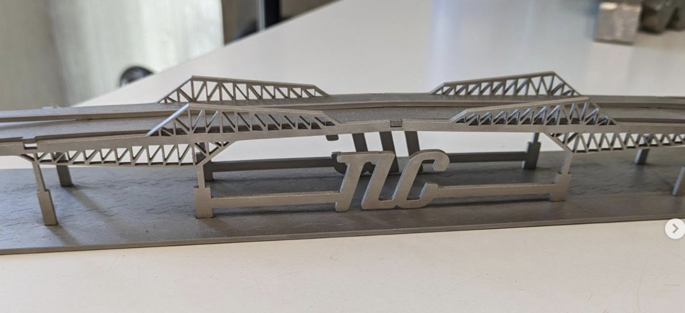

WORK
図面どおりに、鉄やアルミを切り出す。
使うのは、光で金属を切るレーザー加工機。指示書を見て機械に設定を入れれば、あとは機械が切ってくれます。力仕事ではありません。鉄・銅・アルミ・木材・アクリルなど、扱う素材は多彩です。

レーザー加工機のオペレーション
高性能レーザー加工機と最新CADシステムを連動させ、素材を高精度に切断・加工。スマホケースの小物から建設資材の大物まで扱います。

梱包・出荷などの工場内作業
加工した製品の荷造り・梱包も大切な仕事。仕事に慣れてきたら、クレーン免許（国家資格）を会社の全額負担で取得できます。
STEP 1入社〜3ヶ月
まずは製品の荷造り・梱包、残材処理、簡単なオペレーションから。先輩が隣でフォローします。
STEP 21〜3ヶ月〜
個人差はありますが、1〜3ヶ月ほどで機械をひとりで操作できるように。担当できる加工が増えていきます。
STEP 3〜1年
入社から1年ほどで一人前のオペレーターに。クレーン免許などの資格取得で、手当も増えます。